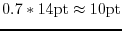

%%<parameter> <value>This changes the layout parameter
<parameter> to
<value> in subsequent lines.
These layout settings may also be collected in a format file with the extension ".fmt", which can be included with the command line option -F. This is useful eg. for a songbook because the layout of all songs can be maintained in a single file. Layout parameter in a format file must not start with %%. A line consisting of the word "end" in a fmt file skips the rest of the file.
To see the settings for all the parameters, use flag -H. When used in conjunction with other flags such as -p, -P, or -F, the corresponding parameters are shown. If you redirect the output to a file and edit out the header line, you immediately have a prototype fmt file which specifies all the parameters.
There are some parameters which can also be set in the E: info field. These are
For example, to output a single tune in a narrower format, put "E:lw 400" into the header of this tune. If this is put after the header but within the tune body, only the music is set with a different width and the title is written as before.
shrink set glue mode to compress space set to natural glue widths stretch stretched glue mode fill normal mode to fill staffs break ignore continuations xref write xref numbers to output one write one tune per page. newpage start new page for next tune lw ppp set local staff width to ppp points.
\) at the
end of the first line.
The best output is usually obtained if the staff breaks are chosen explicitly by suitable line breaks in the input file. In this standard usage, the program tries to set the music as well as possible for each line separately. The symbols "*" and "**" at the end of a line are ignored, as well as the field "E:" for the elementary length.
If a line is too long to fit onto one staff, the overhang is spilled onto the next staff in this version. This makes it possible to get reasonable output even when the input is one long logical line. In practice, this is equivalent to automatic line breaking.
To control line breaking, the following command line options to abctab2ps are available:
-b break at all line ends, even if they end with the continuation symbol " \".-c consider the input as one long line, ie., implicitly append a backslash to every line of music. -B n try to typeset with n bars on each line. -a set the maximal amount of permitted shrinking to , where
%%<itemfont> <postscript font> <size>
<postscript font> must be a valid postscript
font. The standard postscript fonts that are supported by all postscript
devices are: AvantGarde-Demi, AvantGarde-DemiOblique,
AvantGarde-Book, AvantGarde-BookOblique,
Bookman-Light, Bookman-LightItalic, Bookman-Demi, Bookman-DemiItalic,
Courier, Courier-Oblique, Courier-Bold, Courier-BoldOblique,
Helvetica, Helvetica-Oblique, Helvetica-Bold, Helvetica-BoldOblique,
Helvetica-Narrow, Helvetica-NarrowOblique,
Helvetica-NarrowBold, Helvetica-NarrowBoldOblique,
NewCenturySchlbk-Roman, NewCenturySchlbk-Italic, NewCenturySchlbk-Bold,
NewCenturySchlbk-BoldItalic,
Palatino-Roman, Palatino-Italic, Palatino-Bold, Palatino-BoldItalic,
Symbol, Times-Roman, Times-Italic, Times-Bold, Times-BoldItalic,
ZapfChancery-MediumItalic, ZapfDingbats.
<size> is the font size in points
(eg. 14). Note however that the font size (like the size of the music)
will be effected by the parameter scale (see next section);
eg. if scale is set to 0.7 (which is the default) a font size
of 14 will actually result in a
 font.
<itemfont> specifies the scope of the font like title, guitar
chords etc. It can be any of the following values (values without
explanation are deemed obvious):
In printed music, the bar numbers are often made more visible by putting a box around them. This is also possible. In fact, a box can be put around most bits of text by adding the word "box" to the font specification, e.g.:
titlefont subtitlefont composerfont partsfont for part labels (P: filed) tempofont for tempo marks (Q: filed) vocalfont for lyrics or vocals under a staff (w: field) gchordfont for guitar chords textfont for text under the tune, or between tunes wordsfont for words under the tune (W: field) voicefont for voice names (V: field) barnumberfont barlabelfont indexfont
%%barnumberfont Times-Italic 11 boxThis can be done for the title, guitar chords, vocals, etc. To switch on the box without changing the font style and/or size, the character * can be used, as in:
%%titlefont * * box
Because ISO fonts are needed for special characters and accents, all fonts must be known when the header of the PS file is written. The program tries to be as clever as it can about this, but a font might be undefined if it is invoked for the first time further down in a file. For this reason, a line like this can be put into the fmt file:
font Palatino-Boldor alternatively at the top of the abc file:
%%font Palatino-BoldEither of these will define the corresponding ISO font in the header. To make things even easier, the program always looks for a file "fonts.fmt" and loads it if it exists. So, the often-used fonts can be defined there once and for all.
%%pageheight 29cm % height of page %%staffwidth 5in % width of staff %%leftmargin 1.8cm % left margin %%titlespace 1cm % vertical space before the title %%scale 0.9 % size of musical symbols %%staffsep 60pt % space between stavesThe following table lists all possible parameters and their equivalent command line option (if there is one). Parameters without explanation are deemed obvious.
| Parameter | Type | abctab2ps option | Description |
| pageheight | dimension | ||
| staffwidth | dimension | -w | |
| topmargin | dimension | ||
| botmargin | dimension | ||
| leftmargin | dimension | -m | |
| topspace | dimension | vertical space at the top of a tune. (see remark 1.) | |
| titlespace | dimension | space before the title. (see remark 1.) | |
| subtitlespace | dimension | space before the subtitle. | |
| composerspace | dimension | space before the composer. | |
| musicspace | dimension | space between the composer and the music. | |
| partsspace | dimension | space ("up") between the "parts" and the music. | |
| vocalspace | dimension | space above a line of vocals. | |
| wordsspace | dimension | space above the words at the end of a tune. | |
| textspace | dimension | -n | space above the text such as history. |
| gchordspace | dimension | space between staff and guitar chords (music only). | |
| staffsep | dimension | -d | separation between staves. One-half of this distance is added above and below each staff. |
| sysstaffsep | dimension | in multi stave music separation between staves within one system. | |
| systemsep | dimension | in multi stave music separation between systems. | |
| stafflinethickness | decimal | thickness of a single music and tablature staffline. | |
| indent | dimension | amount to indent the first staff. Indentation is done at the start of the piece and after a T: field, but not after a P: field. | |
| scale | decimal | -s | symbol size; eg. 1.0 is used in the "pretty" output. |
| maxshrink | decimal | -a | how much to compress horizontally when staff breaks are chosen automatically. Between 0 and 1. |
| strictness1 | decimal | -X | strictness for single stave music. |
| strictness2 | decimal | -X | strictness for multi stave music. In multi stave music, it is often a good idea to space the notes somewhat more strictly according to their duration than in single stave music. For strictness=1, the spacings for notes with short durations is reasonably strictly proportional to their duration. For strictness=0, they are spaced about equally. Good defaults are strictness1=0.5 and strictness2=0.8. |
| lineskipfac | decimal | factor for spacing between lines of text: 1.0 gives single-space output, 2.0 double etc. | |
| parskipfac | decimal | similar factor for space after a paragraph of text. | |
| barsperstaff | integer | -B | try to put as many bars per staff. |
| barnumbers | integer | -k | write bar number every n-th bar. n=0 writes bar number on the first bar in each staff. |
| barnumberfirst | integer | Start barnumbering with this number instead of 1. | |
| landscape | logical | -l | landscape orientation if true |
| titleleft | logical | title flushed left if true. | |
| titlecaps | logical | title in capital letters | |
| musiconly | logical | -M | no lyrics if true |
| stretchstaff | logical | stretches underfull staves across page | |
| stretchlast | logical | stretches last staff if underfull. | |
| writehistory | logical | -n | writes notes, history etc if true. |
| continueall | logical | -c | continue all lines if true. |
| breakall | logical | -b | break at all line ends. |
| oneperpage | logical | -1 | each tune on separate page. |
| withxrefs | logical | -x | print out X: xref number in title. |
| squarebrevis | logical | draw square brevis (|=|) instead of round (|o|). |
|
| slurisligatura | logical | draw ligatura brackets instead of slurs. | |
| historicstyle | logical | draw diamond shaped note heads music in order to emulate historic prints. Mostly used in connection with nobeams | |
| nobeams | logical | do not draw beams in music | |
| nogracestroke | logical | do not draw stroke through flag of single grace notes | |
| printmetronome | logical | set to false or no when metronome marks in Q: fields shall not be printed | |
| endingdots | logical | draw a dot after the number in first/second endings. | |
| meterdisplay | text | for printing different meter specification, eg. %%meterdisplay 3/2=3 will print ``3'' when ``M:3/2'' is given. |
Remarks:
Several parameters (eg. titlefont, barnumbers, barnumberfirst) will only have any effect when they are declared before the T: field. It is generally the safest bet to declare format parameters between the X: and T: field.
There is one notable exception from this general scope rules: tablature font settings are global and must be set before or in the first tune.
%%sep draws a short centred line as a separator %%sep h1 h2 len draws a separator of length len with space h1 above, space h2 below. %%vskip h adds vertical space of height h %%newpage writes a page break